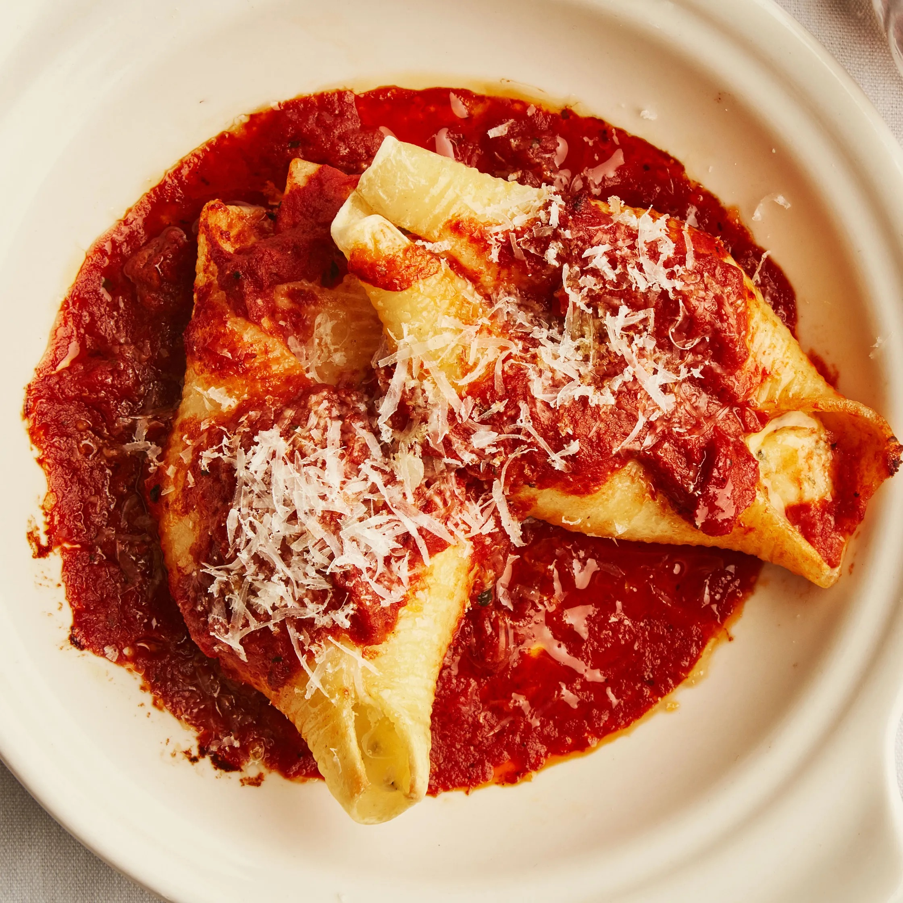

Marinara Sauce

Description
Classig red sauce... mamma mia!
Ingredients
- ¼ cup olive oil
- 1 small onion, finely chopped
- 4 garlic cloves, thinly sliced
- 2 sprigs basil
- 2 28-ounce cans whole peeled tomatoes
- Kosher salt, freshly ground pepper
Steps
- Heat oil in a medium heavy pot over medium.
- Cook onion, stirring occasionally, until very soft, 8–10 minutes.
- Add garlic and cook, stirring occasionally, until very soft, about 5 minutes; stir in basil.
- Add tomatoes, crushing with your hands as you go; season with salt and pepper and bring to a simmer.
- Reduce heat; simmer gently, stirring occasionally, until sauce is thick, about 1 hour.
- Season with salt and pepper.
- Let cool.